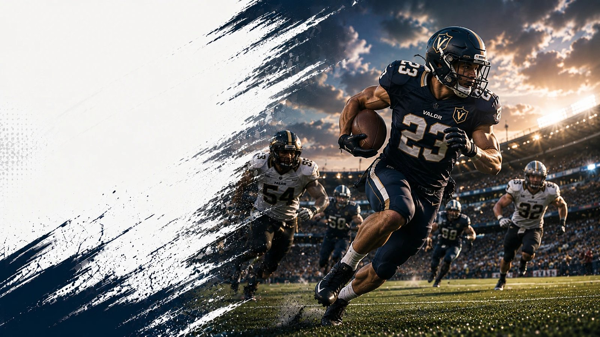

関東の大学アメリカンフットボール
大学アメフトの試合結果・日程・順位を毎日更新
TOP8・BIG8 全2カテゴリ・18チームの結果・順位・過去の対戦データを掲載 | 最終更新 2026-09-02
関東の大学アメリカンフットボール
最新結果
| 日付 | リーグ | 対戦 | スコア |
|---|---|---|---|
| 8月30日（日） | TOP8 | 早稲田大学 vs 日本体育大学 | 28 - 20 |
| 8月30日（日） | BIG8 | 駒澤大学 vs 専修大学 | 12 - 27 |
| 8月29日（土） | TOP8 | 明治大学 vs 慶應義塾大学 | 14 - 13 |
| 8月28日（金） | TOP8 | 法政大学 vs 中央大学 | 38 - 13 |
| 8月27日（木） | TOP8 | 東京大学 vs 立教大学 | 20 - 33 |
読みもの
観戦ガイド 2026-08-27
大学アメフトTOP8とは｜仕組み・出場校・BIG8との違い
関東大学アメフトの最上位リーグ「TOP8」とは何か。BIG8との違い、チャレンジマッチ（入れ替え戦）の仕組み、2026年度の編成をKCFA公式情報から解説します。
観戦ガイド 2026-08-27
甲子園ボウルとは｜出場までの道のりと歴史
大学アメフト日本一決定戦「甲子園ボウル」とは何か。関東のTOP8からどうやって出場権を得るのか、1947年からの歴史と2024年以降の新方式をKCFA・公式情報から解説します。
観戦ガイド 2026-08-27
大学アメフトの試合時間とルール入門｜初観戦ガイド
大学アメフト観戦が初めての方向けに、試合時間・クォーター制・ダウン制・得点の基本ルールを解説。関東大学アメフト（TOP8・BIG8）の日程・チーム情報もあわせて紹介します。